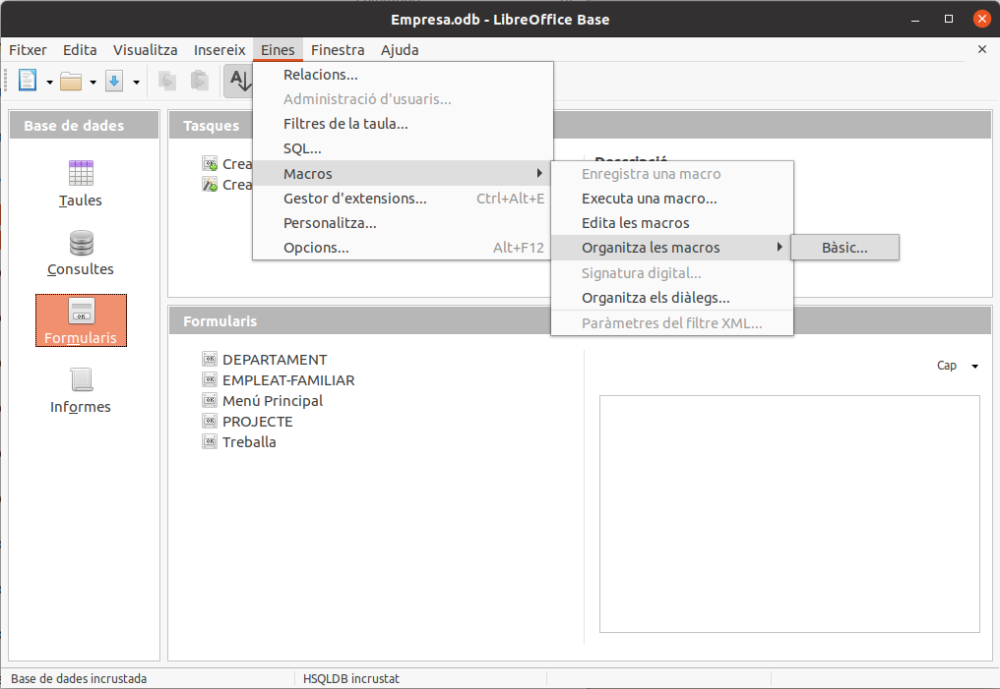
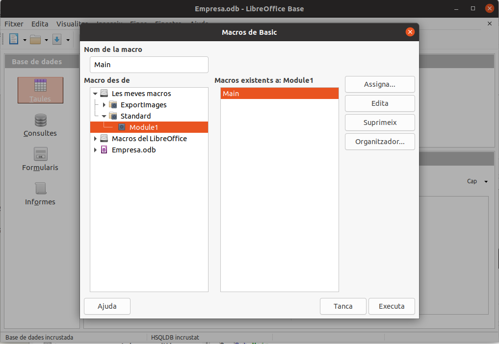
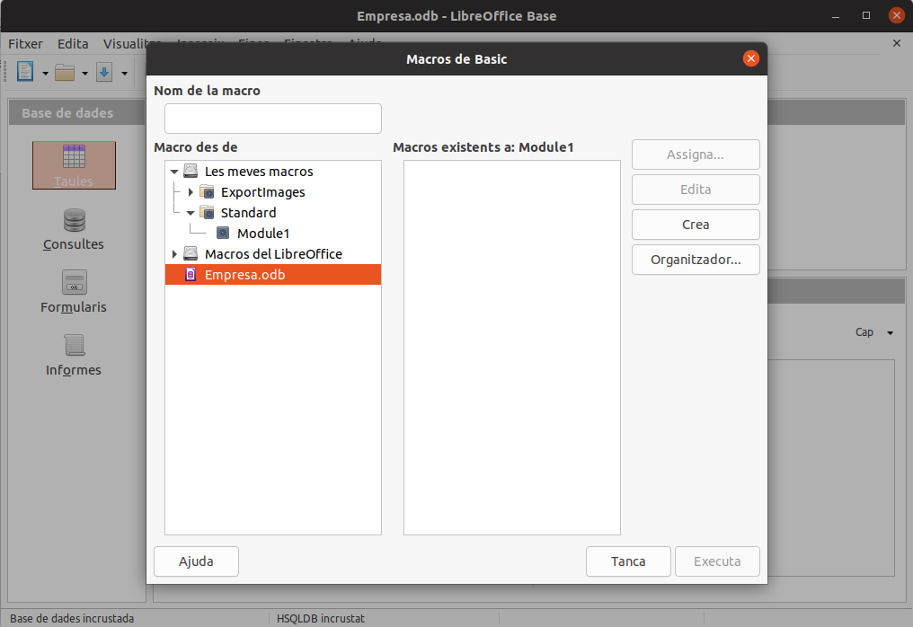
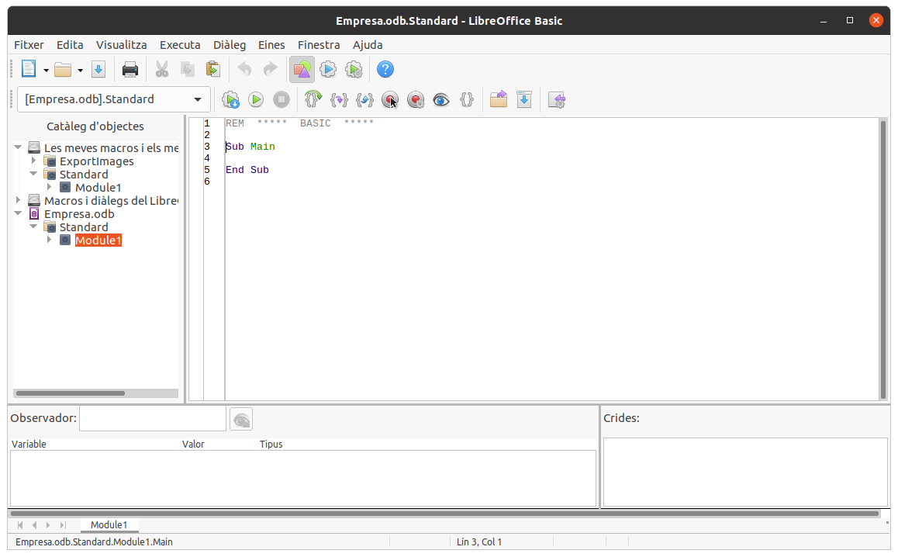
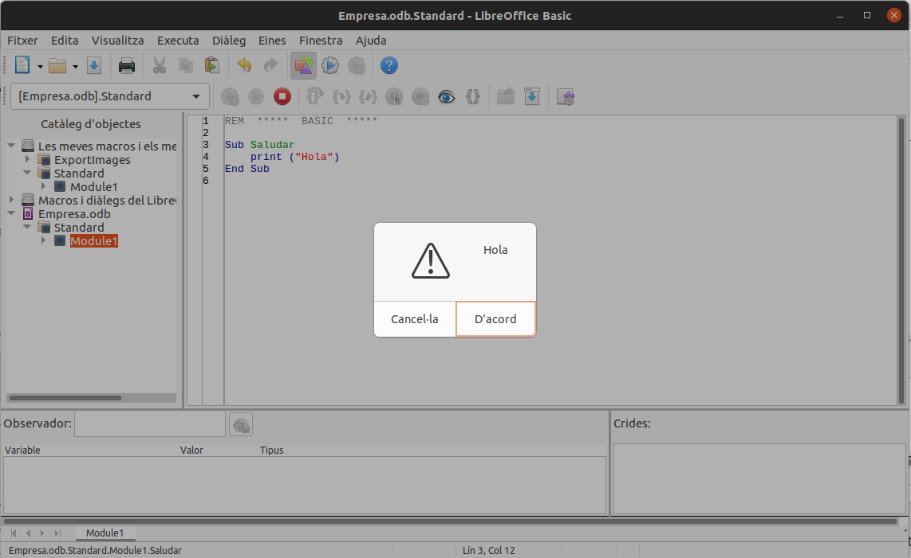
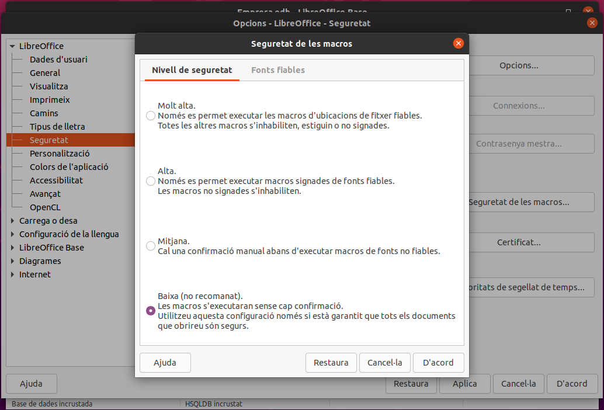

2.1 Creació i execució directa d'una Macro
La manera inicial de crear una macro serà en el menú Eines -> Macros -> Organitza les macros -> Basic

(després de la primera vegada podrem anar un poc més directament amb Eines -> Macros -> Edita les macros )
El que se'ns presentarà per a organitzar les macros serà el següent:

Però el lloc on vol col·locar les macros seria un lloc personal (les meves macros). Millor col·locar les macros en la mateixa Base de Dades, que en el nostre exemple és Empresa.odb. Així, si copiem la Base de Dades, les macros viatjaran amb ella. Per tant, ens situem en Empresa.odb i apretem al botó Crea:

En preguntarà per un nom de mòdul, on van tots els procediments de les macros. El nom que ens proposa Module1 ens va bé.
Se'ns obrirà una finestra on podem observar que està esperant a que escriguem el codi dels procediments en què consistiran les macros

Anem a crear una macro molt senzilleta, per a saludar, escrivint senzillament la sentència print("Hola") dins del procediment (Sub). Aprofitem per a canviar el nom del procediment a Saludar en compte de Main, i després apretem el botó de play (o F5) per a executar-la. Així ens quedarà la cosa:

Aquesta macro s'haurà executat de forma directa sense problemes. Però per a poder executar les macros no de forma directa sinó en resposta a un esdeveniment, haurem de baixar la seguretat i permetre l'execució de macros.
Es fa en el menú Eines -> Opcions -> Seguretat -> Seguretat de les macros, i triar la seguretat més baixa, en la qual sí que permetrem l'execució

Ara anem a crear una Macro que no serà Independent, sinó associada a un objecte. Ho aprofitarem per veure una manera més ràpida per fer el procés de creació d'una macro associada a un esdeveniment.
Llicenciat sota la Llicència Creative Commons Reconeixement NoComercial SenseObraDerivada 2.5